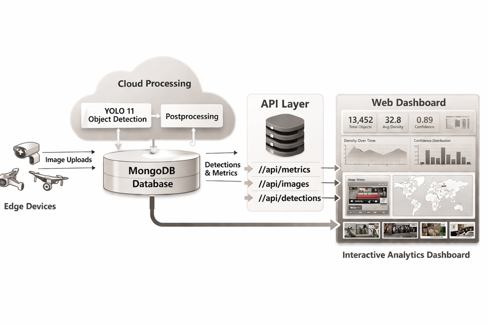

Production pipelines, automated workflows, server deployment, and cloud-based data integration for scalable AI applications.

Built an automated cloud-based pipeline for real-time object detection, combining scheduled data ingestion, model inference, and API-driven data access. The system leverages of IA models running on GPU/CPU, with results stored in a database for scalable analytics, monitoring, and dashboard integration. Supports batch processing and scheduled workflows for continuous data ingestion.
YOLO11 Model: Trained for pollen detection on dense microscopy images.
Server Stack: Ubuntu server + Python 3.11 + PyTorch + Flask API + Gunicorn + Nginx
Database: MongoDB for storing detection results, timestamps, and metadata
Automation: Cron jobs or Celery pipelines for scheduled inference
| Model | mAP | GPU FPS | CPU FPS | DB Storage Latency |
|---|---|---|---|---|
| YOLO11s | 0.923 | 64 FPS | 10 FPS | 5–8 ms |
| YOLO11n | 0.915 | 91 FPS | 30 FPS | 5 ms |